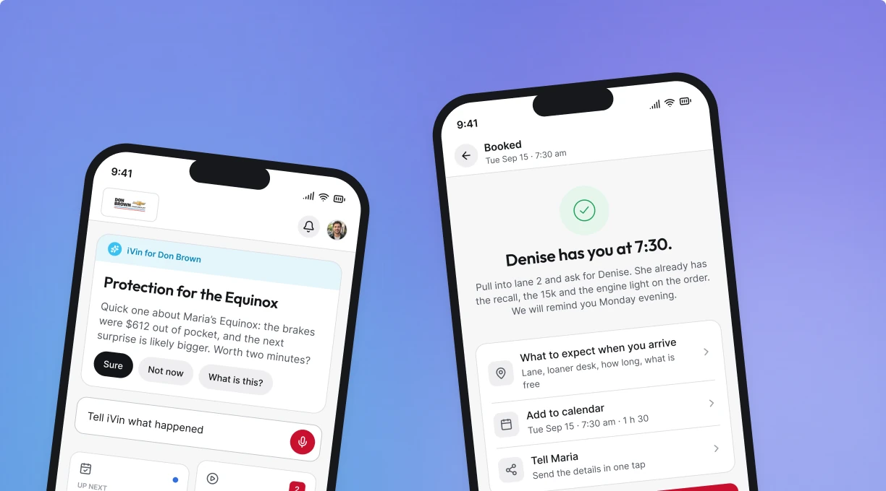

iVin
Un asistente de IA que usa el historial del auto para responder preguntas de cobertura y llevar la conversación hasta agendar el servicio.
Vinsyt · App móvil de consumo · 2022 a 2026 · En producción
Ver el caso de estudio App móvil de consumo